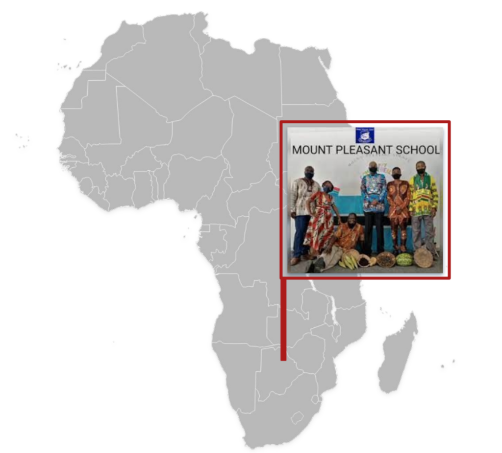
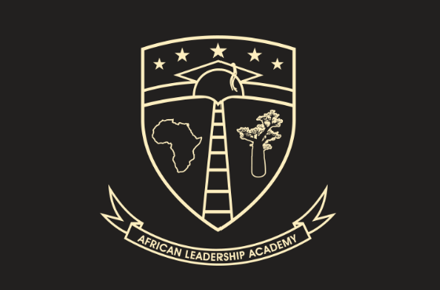
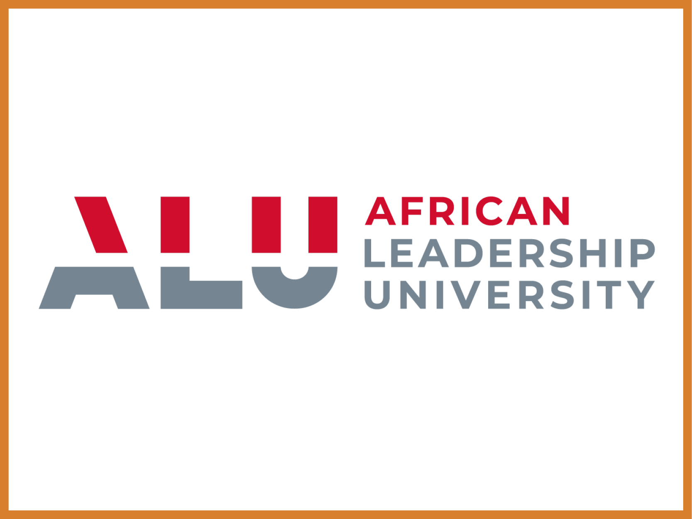
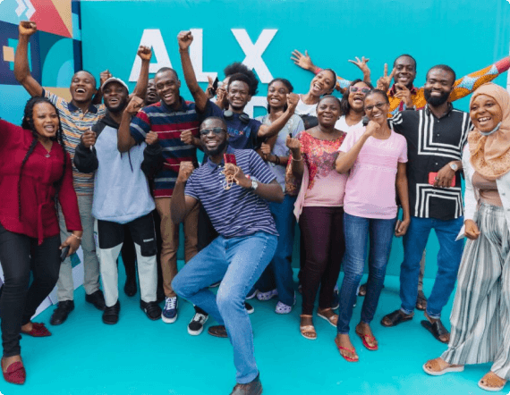
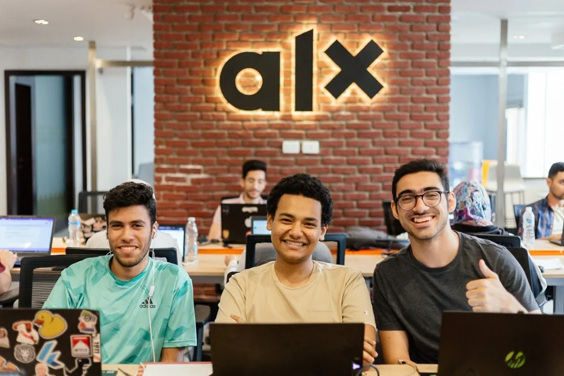
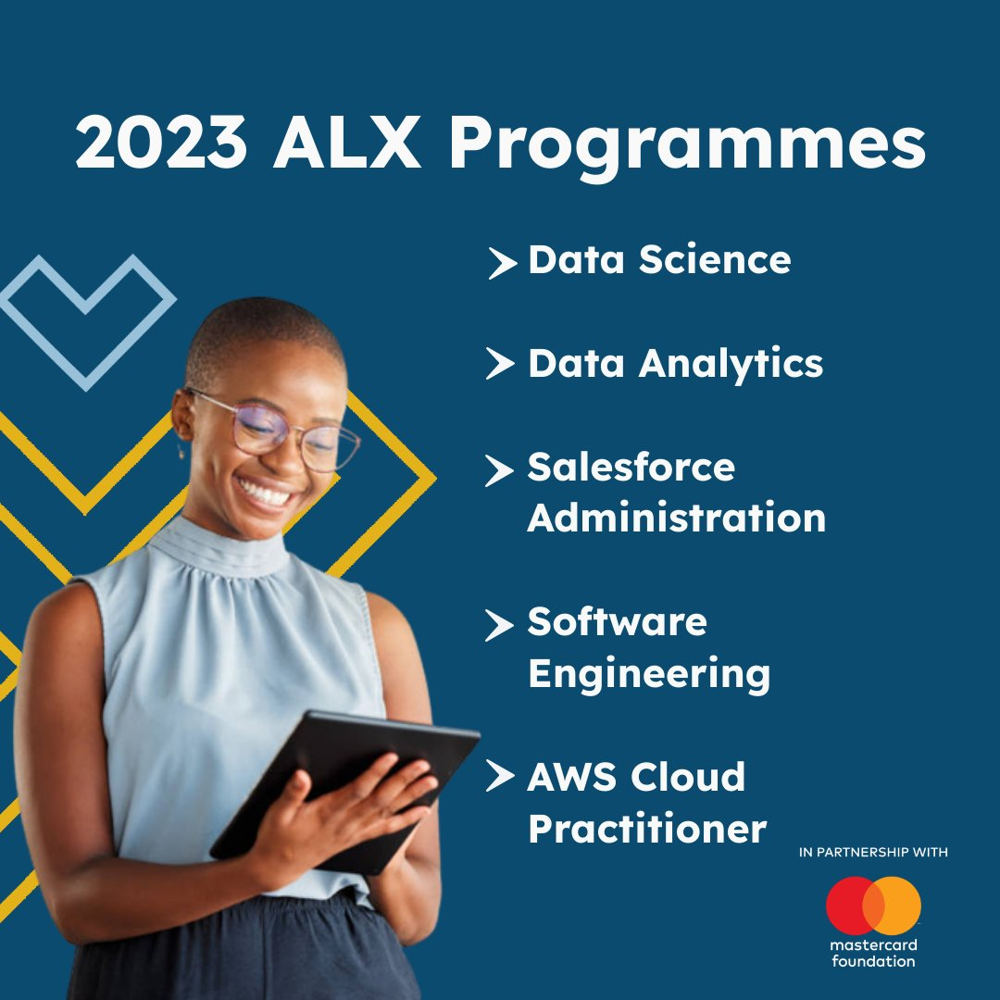

1994 - Founding of the Mount Pleasant School
Fred Swaniker became the headmaster of the Mount Pleasant School. The mission for the school was simple: quality but affordable education. Learn more.
2004 - Founding of the African Leadership Academy
ALA was founded with the aim of equipping 6000 African youth with the skills and knowledge to solve Africa's greatest problems and capture its biggest opportunities. You can explore the ALA history here.
However, ALA's model faced 3 challenges.
2013 - Establishment of African Leadership University (ALU)
ALU was founded to provide higher education at a lower cost to a higher scale in order to help African talent become strong leaders and tackle Africa's challenges. You can discover ALU here.
However, ALU's model faced 2 main challenges.
2018 - Introduction of ALX: Moving Beyond Regulated Higher Education
ALX was introduced to focus on professional and vocational training, equipping young Africans with the skills needed in the modern economy. Since ALX's model is infinitely scalable, all students need for low-cost, quality education are Internet access and a laptop.Read more about ALX.
2021 - Expansion into Tech Services and Data Science
ALG expanded its offerings to include specialized training in tech services and data science, responding to the growing demand for digital skills. Find out more.
2023 - Reaching Over 10,000 Graduates and Launching Global Initiatives
By 2023, ALG had impacted over 10,000 young leaders, with initiatives extending beyond Africa to global platforms. Learn about our global reach.
Continuing the Legacy
ALG continues to innovate and expand, staying true to its mission of nurturing a new generation of ethical and entrepreneurial African leaders. Our journey is a testament to the power of education and leadership in transforming societies. Find out more about our ongoing projects and future plans.